Ready-made pictures of the labs for use in the article. Each one is a capture of an interactive lab in a chosen state, saved at double resolution in article/figures/. To change one, edit its entry in tools/figures/ and run node tools/figures.js.
Every picture shows the lab exactly as the page draws it, so the colours keep their meaning: red and blue for the first and second vector or row, amber for targets and results, green for a third series.
Lecture 1 · The Geometry of Linear Equations
Row picture of the lecture example: the lines 2x − y = 0 (red) and −x + 2y = 3 (blue) cross at the solution (1, 2).
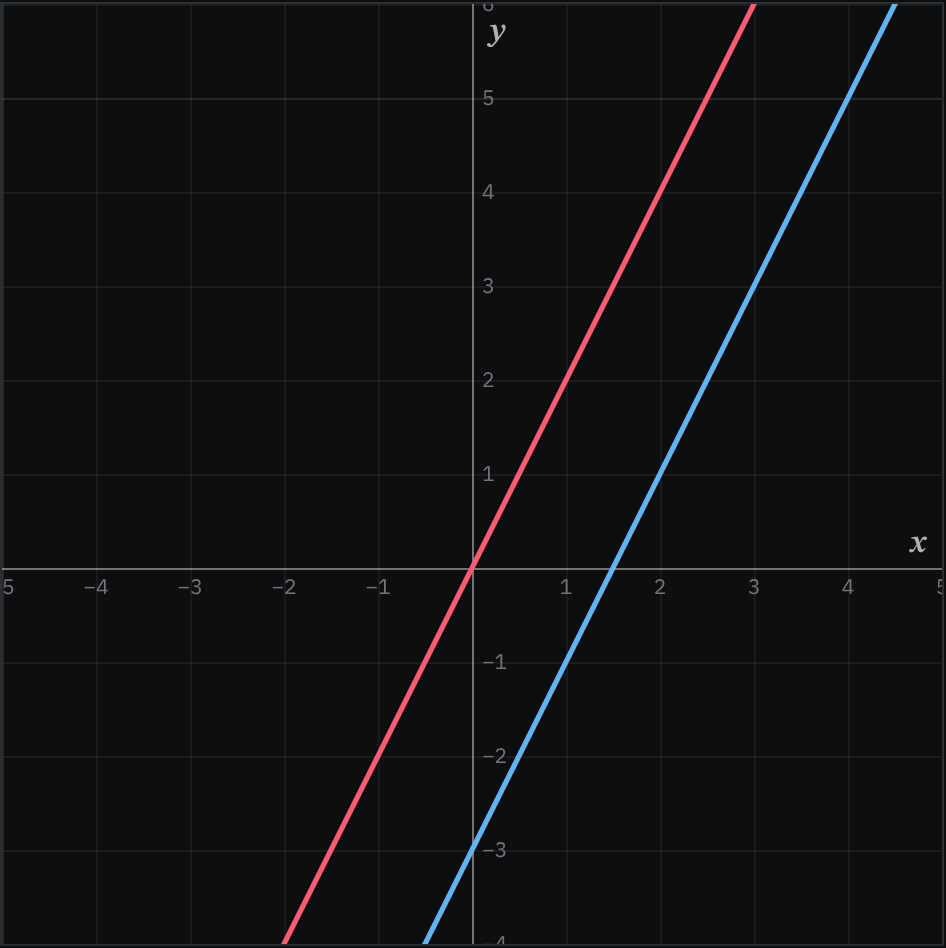
Singular case one: parallel lines never meet, so the system has no solution.Singular case two: the second equation repeats the first, so every point of the line is a solution.
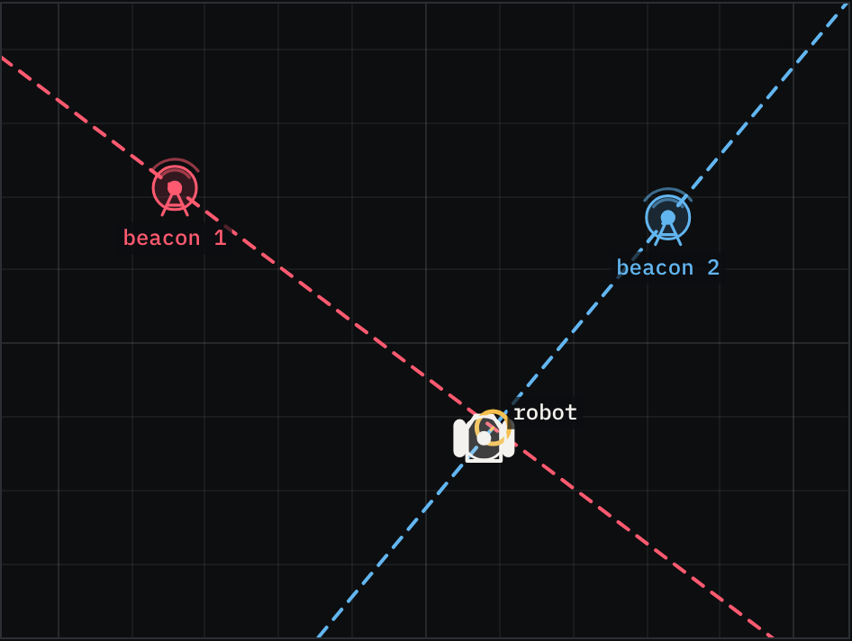
Triangulation is the row picture. Each bearing puts the robot on a line; with a wide crossing, 2° of sensor error barely moves the computed position (amber ring).The same sensors with a thin crossing: the same 2° error now pushes the computed position (amber ring) well away from the robot. Nearly singular means fragile.
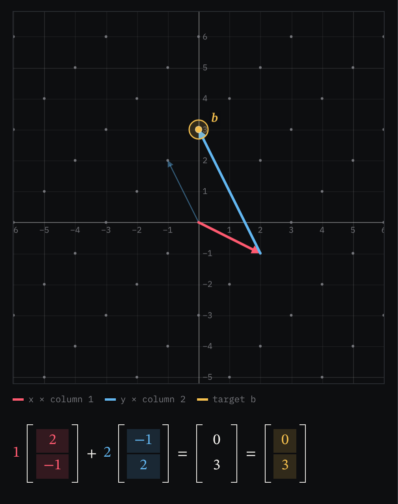
Column picture of the same example: one red column plus two blue columns lands exactly on the target b = (0, 3).Parallel columns: every combination stays on one line, so a target off that line cannot be reached.A two-link arm. The wanted hand velocity (amber) is built from the shoulder’s share (red) plus the elbow’s share (blue): the column picture of J q̇ = v.
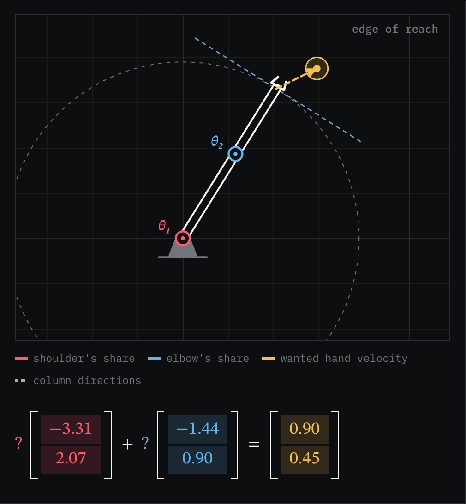
The arm stretched straight. Both column directions (dashed) coincide, so the hand cannot move along the arm: a singularity.A times x by columns: the answer is a combination of the columns of A.A times x by rows: each entry of the answer is one row of A dotted with x.
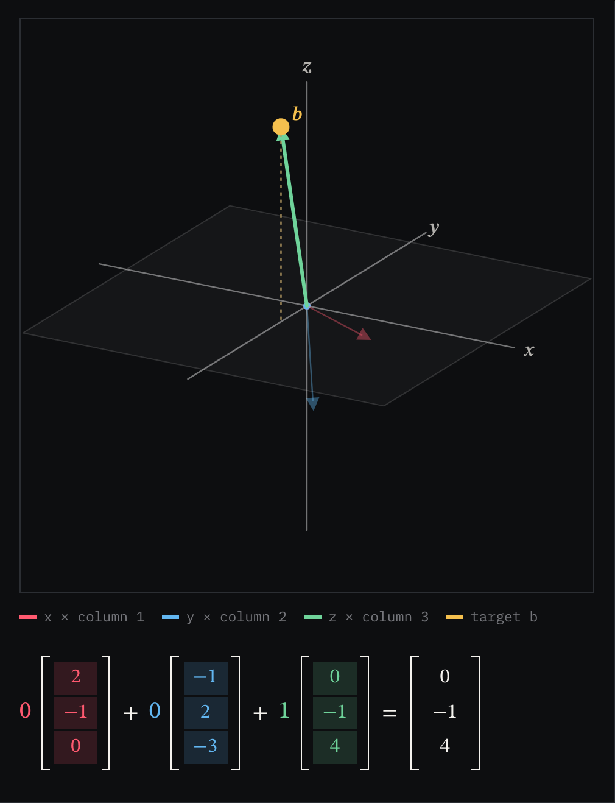
Three columns in space. The target b is the third column itself, so the solution is x = 0, y = 0, z = 1.Thrust allocation with a good layout: the three thruster columns fill (Fx, Fy, τ) space, so any push and turn can be produced.
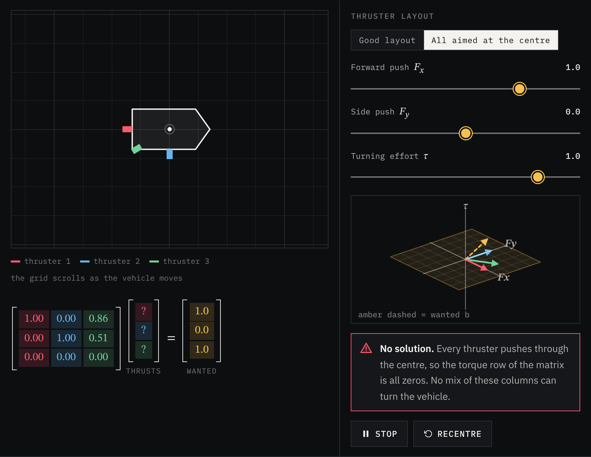
All thrusters aimed through the centre: the columns lie in one plane (no torque), and a request to turn has no solution.
Capstone: one robot, seven lectures
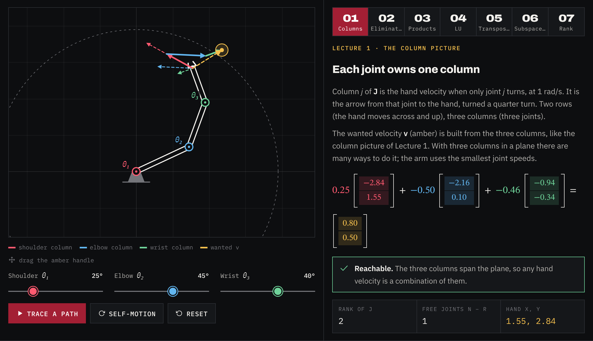
Lens 01, the column picture: each joint owns one column of J, and the wanted hand velocity (amber) is a combination of the three.Lens 02, elimination: J | v reduces to two pivots. The joint without a pivot is free, so many joint speeds do the same job.
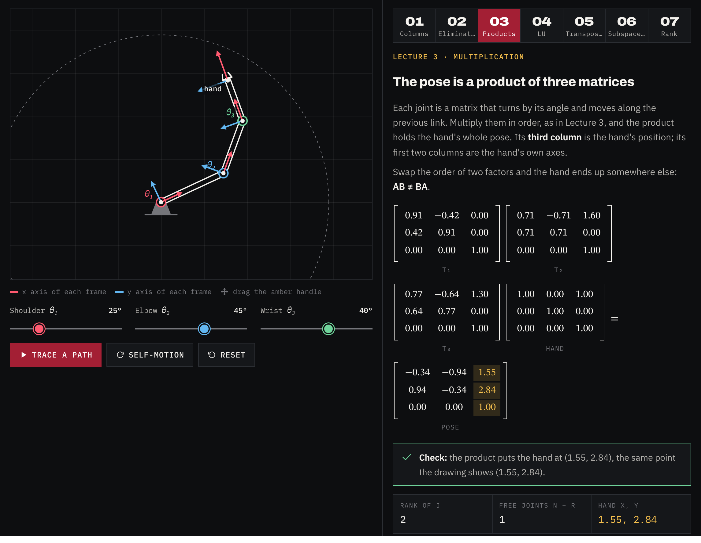
Lens 03, multiplication: the hand pose is the product of the link transforms, and its third column is the hand position.
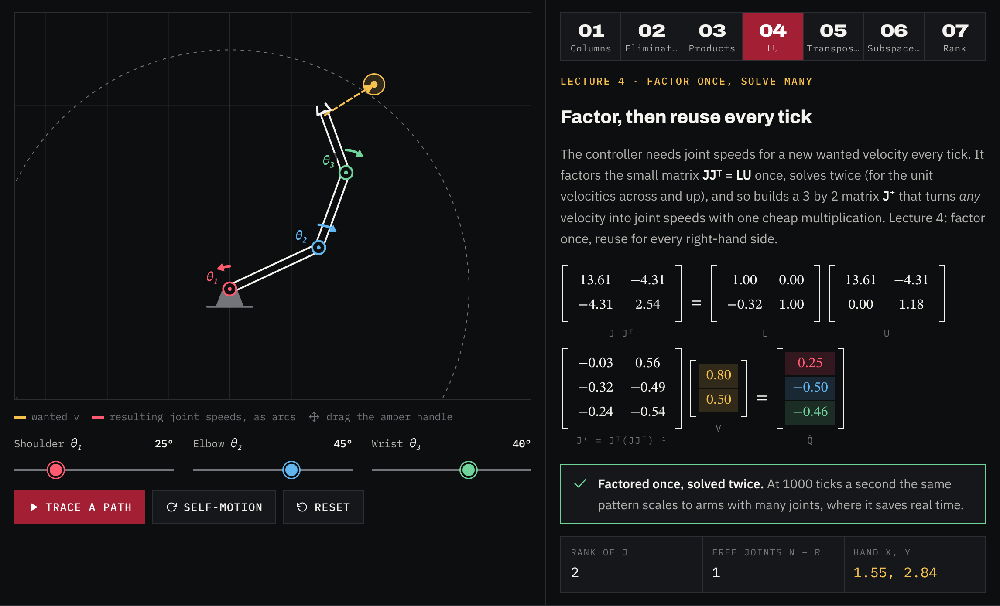
Lens 04, LU: JJᵀ is factored once and reused for every wanted velocity, giving joint speeds with one multiplication.
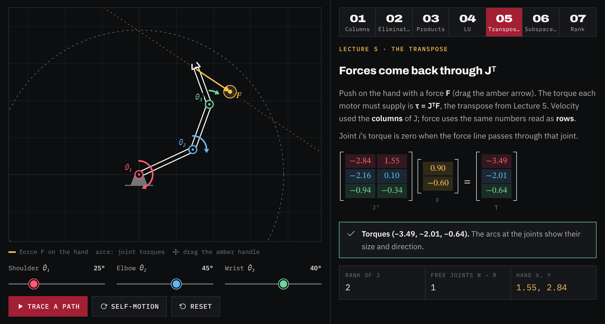
Lens 05, the transpose: a force on the hand becomes joint torques through Jᵀ.
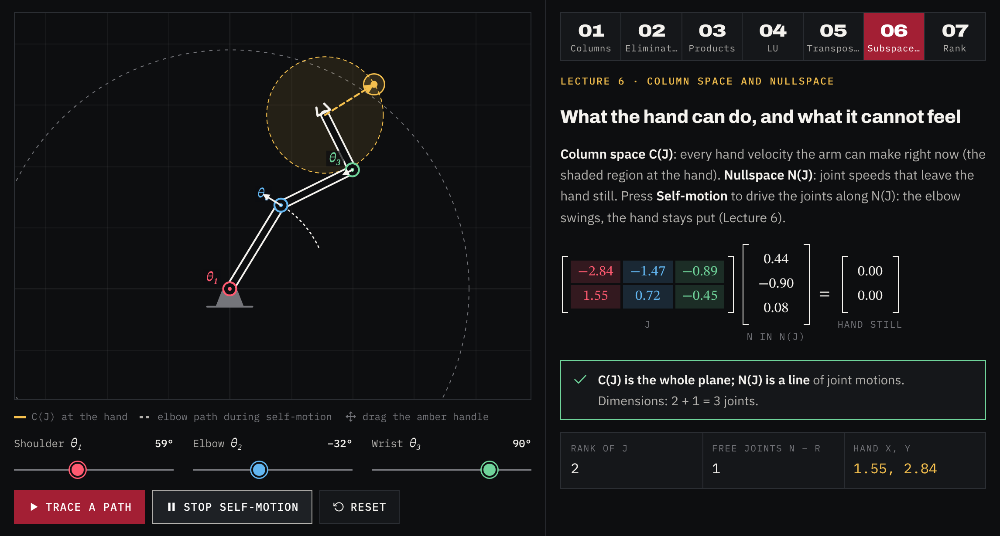
Lens 06, column space and nullspace: during self-motion the elbow swings (dashed path) while the hand does not move.Lens 07, rank: two pivot joints (red), one free joint (blue), one special solution.
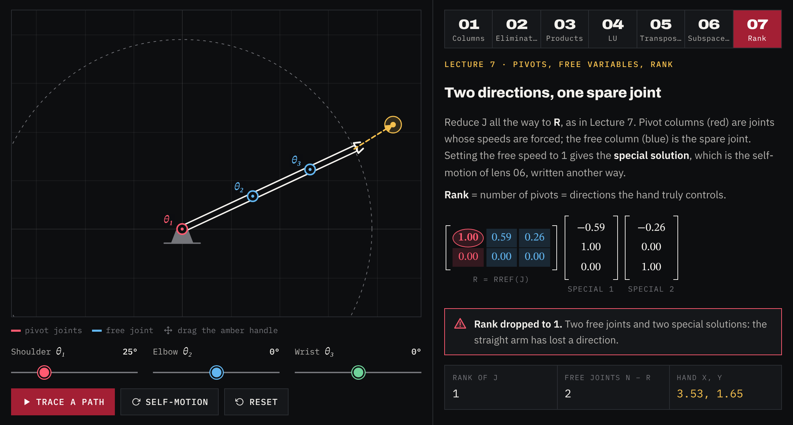
The straight arm through lens 07: the rank drops from 2 to 1 and a second special solution appears. Every lens reports the same event in its own words.